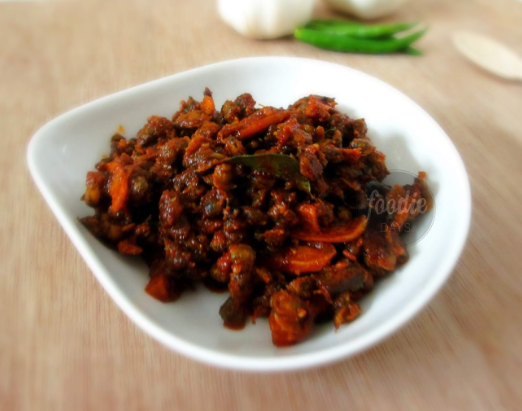
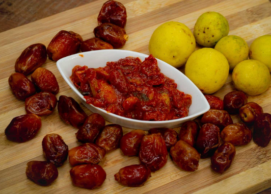
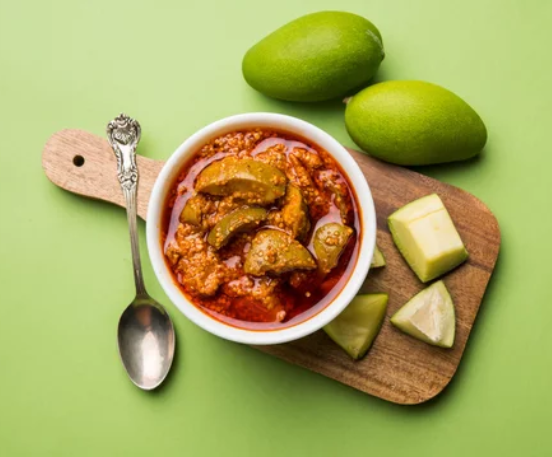
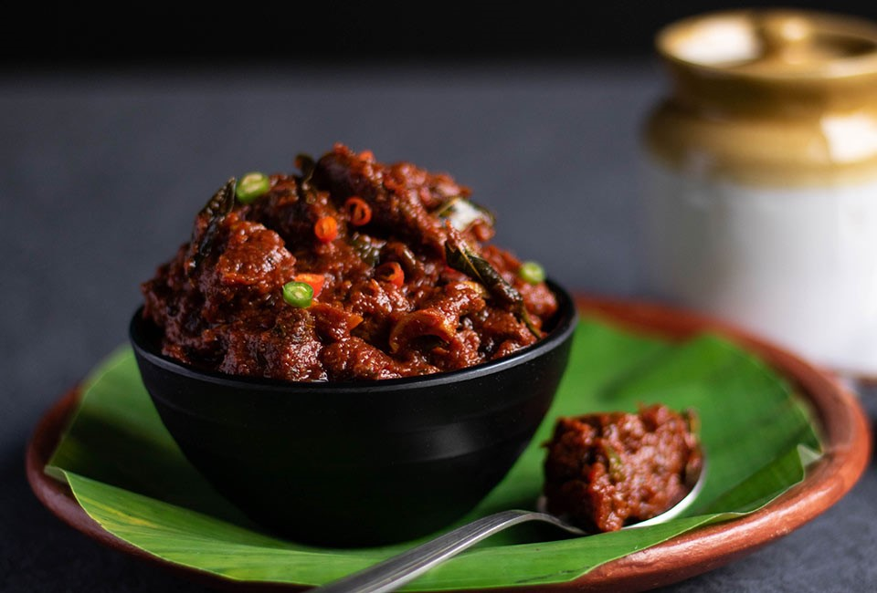
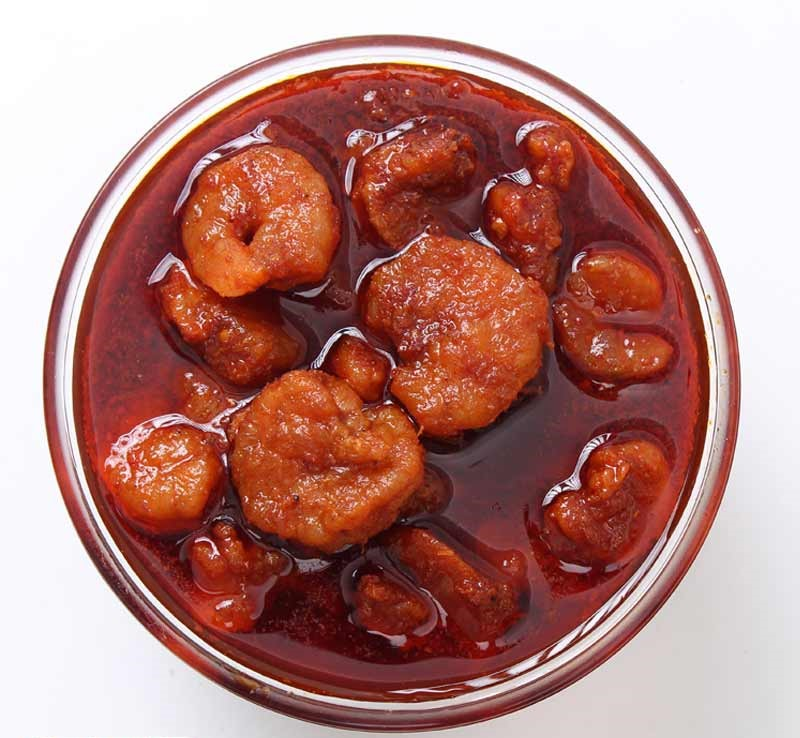
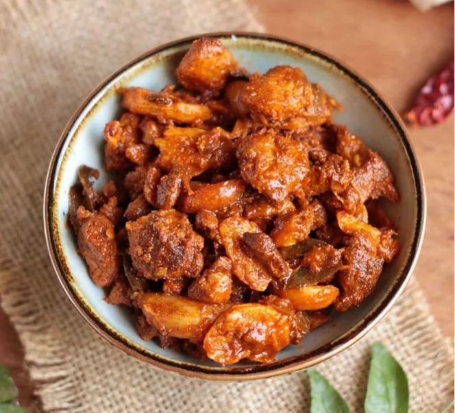
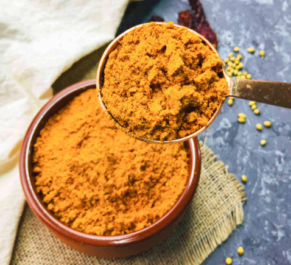
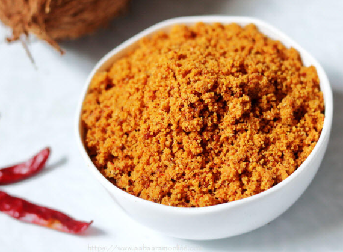
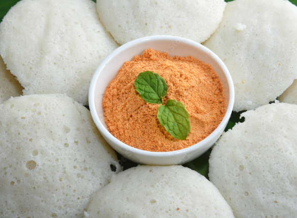

THE BEST HOME MADE PICKLES THAT YOU COULD GET AT YOUR DOORSTEP
Welcome to ENTASTE, where we craft the finest homemade, all-natural pickles to tantalize your taste buds! ✨ Our pickles are lovingly prepared with the freshest ingredients, free from artificial preservatives or additives. Dive into a world of flavor with our diverse range of pickle varieties, each bursting with authenticity and tradition.

CLAM PICKLE
Lemon Pickle is a traditional condiment which is made fresh lemons, ground spices and salt. It is an ideal taste enhancer condiment that can be shared with the choice of parathas or with any rice variant.
Price (500g) : 400
LEMON DATES
Lemon Dates Pickle is a sweet and tangy delight made from fresh lemons, dates, and a blend of spices. This unique pickle balances the tartness of lemons with the natural sweetness of dates, creating a versatile condiment.
Price (500g) : 250
MANGO PICKLE
Savor the classic taste of our Mango Pickle, a fusion of ripe mangoes, ground spices, and salt. A timeless condiment that adds a burst of flavor to your favorite rice variants or alongside parathas.
Price (500g) : 200
BEEF PICKELE
Beef Pickle is a savory and robust condiment crafted from tender beef pieces, aromatic spices, and salt. This traditional delicacy offers a unique and rich flavor profile, making it a delectable accompaniment to a variety of dishes.
Price (500g) : 450
PRAWNS PICKLE
Lemon Pickle is a traditional condiment which is made fresh lemons, ground spices and salt. It is an ideal taste enhancer condiment that can be shared with the choice of parathas or with any rice variant.
Price (500g) : 500
FISH PICKLE
Fish Pickle is a culinary masterpiece that combines the goodness of fish with a harmonious mix of ground spices and salt. This pickle offers a delightful balance of flavors, creating a lip-smacking addition to your dining experience.
Price (500g) : 450
SAMBAR POWDER
Lemon Pickle is a traditional condiment which is made fresh lemons, ground spices and salt. It is an ideal taste enhancer condiment that can be shared with the choice of parathas or with any rice variant.
Price (500g) : 250
CHAMMANTHI POWDER
Lemon Pickle is a traditional condiment which is made fresh lemons, ground spices and salt. It is an ideal taste enhancer condiment that can be shared with the choice of parathas or with any rice variant.
Price (500g) : 250
IDLI POWDER
Lemon Pickle is a traditional condiment which is made fresh lemons, ground spices and salt. It is an ideal taste enhancer condiment that can be shared with the choice of parathas or with any rice variant.
Price (500g) : 250
ABOUT ENTASTE PICKELS....
Why choose ENTASTE pickles?
🌱 Handcrafted with love in small batches
🍒 Premium, locally sourced ingredients
🌶️ No artificial preservatives or additives
👩🍳 Tried-and-true family recipes
Indulge in the crisp crunch and robust taste that only homemade pickles can offer. Whether you're a pickle aficionado or a newcomer to the world of gourmet pickles, ENTASTE is your go-to destination for pickle perfection.
Savor the goodness of homegrown flavors. Elevate your meals with ENTASTE pickles – a jar of joy in every bite! 🌈👩🌾
Order now and experience the pickle paradise! 🛒🍽️ #PickledPerfection #HomemadeGoodness #ArtisanPickles